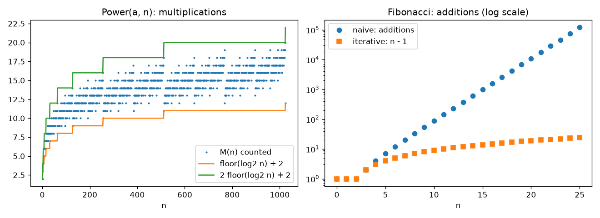

Module 2 · Quiz and problems
Check yourself on the analysis of recursive algorithms. Theory: Module 2.
Try each problem on paper first. If you are stuck, open the hint. Compare your result with the answer, and open the full solution only after you have tried. For every recurrence, check your formula on \(n = 1, 2, 3\).
Quiz: 10 questions
Level A problems (basic)
A1. Adding a constant Level A
Solve by backward substitution: \(x(n) = x(n-1) + 5\) for \(n > 1\), \(x(1) = 0\).
Hint
After \(i\) substitutions you get \(x(n - i) + 5i\). The initial condition is at 1, so \(n - i = 1\).
Answer
\(x(n) = 5(n - 1)\).
Full solution
Take \(i = n - 1\): \(x(n) = x(1) + 5(n-1) = 5(n-1)\).
Check: \(x(2) = x(1) + 5 = 5 = 5\cdot1\) ✔, \(x(3) = 10 = 5\cdot2\) ✔.
A2. Multiplying by a constant Level A
Solve: \(x(n) = 3x(n-1)\) for \(n > 1\), \(x(1) = 4\). What is the order of growth?
Hint
Each substitution multiplies by another 3: \(x(n) = 3^i x(n-i)\).
Answer
\(x(n) = 4\cdot 3^{n-1} \in \Theta(3^n)\).
Full solution
Take \(i = n - 1\): \(x(n) = 3^{n-1} x(1) = 4\cdot3^{n-1}\). Since \(4\cdot3^{n-1} = \frac43\cdot 3^n\), \(x(n) \in \Theta(3^n)\).
Check: \(x(2) = 12 = 4\cdot3\) ✔, \(x(3) = 36 = 4\cdot9\) ✔.
A3. Recursive array sum Level A
ALGORITHM RecSum(A[0..n − 1]) //Returns the sum of the elements of A, n ≥ 1 if n = 1 return A[0] else return RecSum(A[0..n − 2]) + A[n − 1]
Set up a recurrence with an initial condition for the number of additions and solve it.
Hint
How many additions does the base case perform? How many does one call do itself, outside the recursive call?
Answer
\(A(n) = A(n-1) + 1\), \(A(1) = 0\); \(A(n) = n - 1 \in \Theta(n)\).
Full solution
Input size \(n\), basic operation: addition, one case.
A call on \(n > 1\) elements makes one recursive call on \(n - 1\) elements and one addition. The base case returns \(A[0]\) without additions:
\[ A(n) = A(n-1) + 1, \quad n > 1; \qquad A(1) = 0. \]Backward substitution: \(A(n) = A(n-i) + i\); with \(i = n - 1\): \(A(n) = A(1) + n - 1 = n - 1\).
A4. Halving with a nonzero initial condition Level A
Solve for \(n = 2^k\): \(x(n) = x(n/2) + 1\) for \(n > 1\), \(x(1) = 1\). (This is the worst-case number of key comparisons of recursive binary search.)
Hint
Write the recurrence in terms of \(k\): \(x(2^k) = x(2^{k-1}) + 1\). Remember \(k = \log_2 n\).
Answer
\(x(n) = \log_2 n + 1 \in \Theta(\log n)\).
Full solution
Take \(i = k\): \(x(2^k) = x(1) + k = k + 1\). Since \(k = \log_2 n\), \(x(n) = \log_2 n + 1\).
Check: \(x(2) = x(1) + 1 = 2 = \log_2 2 + 1\) ✔, \(x(8) = 4 = 3 + 1\) ✔.
Level B problems (intermediate)
B1. A growing term \(n\) Level B
Solve: \(x(n) = x(n-1) + n\) for \(n > 0\), \(x(0) = 0\). (Such a recurrence appears for an algorithm that does \(n\) operations and then recurses on \(n - 1\) elements.)
Hint
The added terms are not equal now: \(x(n) = x(n-2) + (n-1) + n\). After going all the way down you get a familiar sum.
Answer
\(x(n) = \dfrac{n(n+1)}{2} \in \Theta(n^2)\).
Full solution
Take \(i = n\): \(x(n) = x(0) + 1 + 2 + \dots + n = \dfrac{n(n+1)}{2}\).
Induction: base \(x(0) = 0\) ✔; step \(x(n) = \frac{(n-1)n}{2} + n = \frac{n^2 - n + 2n}{2} = \frac{n(n+1)}{2}\) ✔.
B2. Two halves plus linear work Level B
Solve for \(n = 2^k\): \(x(n) = 2x(n/2) + n\) for \(n > 1\), \(x(1) = 0\). (This is the pattern of algorithms like mergesort.)
Hint
Substitute twice and look at the result: \(x(2^k) = 2^2 x(2^{k-2}) + 2\cdot 2^k\). Each substitution adds another \(2^k\).
Answer
\(x(n) = n\log_2 n \in \Theta(n\log n)\).
Full solution
Take \(i = k\): \(x(2^k) = 2^k x(1) + k\,2^k = k\,2^k = n\log_2 n\).
Check: \(x(2) = 2\cdot0 + 2 = 2 = 2\log_2 2\) ✔; \(x(4) = 2\cdot2 + 4 = 8 = 4\cdot2\) ✔.
Recursion tree view: \(\log_2 n\) levels, and on each level the work adds up to \(n\).
B3. Three recursive calls Level B
ALGORITHM Stars(n) if n = 0 return Stars(n − 1) Stars(n − 1) Stars(n − 1) print "∗"
Let \(S(n)\) be the number of stars printed. Set up the recurrence, solve it, and confirm the answer with a recursion tree.
Hint
Three calls on \(n - 1\), plus one star. In the tree, level \(l\) has \(3^l\) nodes; which levels print a star? Use the geometric series with \(a = 3\).
Answer
\(S(n) = 3S(n-1) + 1\), \(S(0) = 0\); \(S(n) = \dfrac{3^n - 1}{2} \in \Theta(3^n)\).
Full solution
Recurrence: \(S(n) = 3S(n-1) + 1\) for \(n > 0\), \(S(0) = 0\) (the base case prints nothing).
\[ \begin{aligned} S(n) &= 3S(n-1) + 1 = 3[3S(n-2) + 1] + 1 = 3^2 S(n-2) + 3 + 1 \\ &= 3^3 S(n-3) + 3^2 + 3 + 1 = \dots = 3^i S(n-i) + \sum_{j=0}^{i-1} 3^j. \end{aligned} \]Take \(i = n\): \(S(n) = 3^n\cdot 0 + \dfrac{3^n - 1}{3 - 1} = \dfrac{3^n - 1}{2}\).
Tree: level \(l\) contains \(3^l\) calls with argument \(n - l\). Calls with argument \(\ge 1\) (levels \(0, \dots, n-1\)) print one star each; the leaves (argument 0) print nothing. Total \(\sum_{l=0}^{n-1} 3^l = \frac{3^n - 1}{2}\) ✔.
Check: \(S(1) = 1\), \(S(2) = 4 = (9-1)/2\) ✔.
B4. Odd numbers add up to a square Level B
Solve: \(x(n) = x(n-1) + 2n - 1\) for \(n > 1\), \(x(1) = 1\). Then prove your answer by induction.
Hint
Compute \(x(2), x(3), x(4)\) first and guess. Going down to \(x(1)\) you get the sum of odd numbers \(1 + 3 + 5 + \dots + (2n - 1)\).
Answer
\(x(n) = n^2\).
Full solution
Small values: \(x(2) = 1 + 3 = 4\), \(x(3) = 4 + 5 = 9\), \(x(4) = 9 + 7 = 16\). Guess: \(x(n) = n^2\).
Backward substitution: \( x(n) = x(n-1) + (2n-1) = x(n-2) + (2n-3) + (2n-1) = \dots = x(1) + \sum_{m=2}^{n} (2m - 1). \) Since \(x(1) = 1 = 2\cdot1 - 1\), \[ x(n) = \sum_{m=1}^{n} (2m - 1) = 2\cdot\frac{n(n+1)}{2} - n = n^2. \]
Induction. Base: \(x(1) = 1 = 1^2\) ✔. Step: assume \(x(n-1) = (n-1)^2\). Then \(x(n) = (n-1)^2 + 2n - 1 = n^2 - 2n + 1 + 2n - 1 = n^2\) ✔.
Level C problems (advanced)
C1. Proof by induction: fast exponentiation is logarithmic Level C
For the algorithm Power(a, n) from Module 2 (Example 2.5), the number of multiplications satisfies \(M(0) = 0\) and \(M(n) = M(\lfloor n/2\rfloor) + 1\) for even \(n > 0\), \(M(n) = M(\lfloor n/2\rfloor) + 2\) for odd \(n\).
- Prove by (strong) induction that \(M(n) \le 2\lfloor \log_2 n \rfloor + 2\) for all \(n \ge 1\).
- Show that the bound is reached exactly when \(n = 2^k - 1\).
Hint
In the inductive step use \(M(n) \le M(\lfloor n/2\rfloor) + 2\) and the fact that \(\lfloor \log_2 \lfloor n/2 \rfloor \rfloor = \lfloor \log_2 n \rfloor - 1\) for \(n \ge 2\). For (b), what does the binary representation of \(2^k - 1\) look like?
Answer
(a) Base \(M(1) = 2\); the step follows from the hint. (b) For \(n = 2^k - 1\) every number in the chain \(n, \lfloor n/2\rfloor, \dots, 1\) is odd, so \(M(2^k - 1) = 2k = 2\lfloor\log_2 n\rfloor + 2\).
Full solution
(a) Base \(n = 1\): \(M(1) = M(0) + 2 = 2\) and \(2\lfloor\log_2 1\rfloor + 2 = 2\). ✔
Inductive step. Let \(n \ge 2\) and assume the inequality holds for all \(m\) with \(1 \le m < n\). Let \(j = \lfloor \log_2 n\rfloor\), so \(2^j \le n < 2^{j+1}\) and \(j \ge 1\). Then \(2^{j-1} \le \lfloor n/2 \rfloor < 2^j\), so \(m = \lfloor n/2\rfloor \ge 1\) and \(\lfloor\log_2 m\rfloor = j - 1\). Using the recurrence (in the worst case +2) and the inductive hypothesis:
\[ M(n) \le M(m) + 2 \le 2(j - 1) + 2 + 2 = 2j + 2 = 2\lfloor\log_2 n\rfloor + 2. \]So the inequality holds for all \(n \ge 1\), and \(M(n) \in O(\log n)\). Together with the lower bound \(M(n) \ge \lfloor\log_2 n\rfloor + 2\) (every call with \(n \ge 1\) does at least one multiplication), \(M(n) \in \Theta(\log n)\).
(b) \(n = 2^k - 1\) is \(\underbrace{11\dots1}_{k}\) in binary, and \(\lfloor n/2\rfloor = 2^{k-1} - 1\) is again all ones. So every call in the chain has an odd argument and adds 2: \[ M(2^k - 1) = M(2^{k-1} - 1) + 2 = \dots = M(1) + 2(k-1) = 2k. \] Since \(\lfloor\log_2(2^k - 1)\rfloor = k - 1\), the bound is \(2(k-1) + 2 = 2k\) — equality. For any other \(n\), at least one argument in the chain is even and adds only 1, so the inequality is strict.
C2. Climbing stairs: repeated subproblems Level C
You can climb a staircase 1 or 2 steps at a time. The number of ways to climb \(n\) steps is computed by:
ALGORITHM Ways(n) //n ≥ 1 if n ≤ 2 return n else return Ways(n − 1) + Ways(n − 2)
- Write the recurrence and initial conditions for the number of additions \(A(n)\).
- Prove by induction that \(A(n) = F(n) - 1\), where \(F\) are the Fibonacci numbers (\(F(1) = F(2) = 1\)). What is the order of growth?
- How many additions does an iterative version make? Compare for \(n = 30\).
Hint
(a) The base cases are \(n = 1\) and \(n = 2\). (b) You need two base cases for the induction, because the recurrence uses two previous values. (c) Keep the last two values in a loop from 3 to \(n\).
Answer
(a) \(A(n) = A(n-1) + A(n-2) + 1\) for \(n > 2\), \(A(1) = A(2) = 0\). (b) \(A(n) = F(n) - 1 \in \Theta(\varphi^n)\), \(\varphi \approx 1.618\). (c) \(n - 2\) additions; for \(n = 30\): \(832\,039\) vs. \(28\).
Full solution
(a) A call with \(n > 2\) makes two recursive calls and one addition; the base cases make no additions: \[ A(n) = A(n-1) + A(n-2) + 1, \; n > 2; \qquad A(1) = 0,\; A(2) = 0. \]
(b) Induction. Base: \(A(1) = 0 = F(1) - 1\), \(A(2) = 0 = F(2) - 1\). ✔ Step: let \(n > 2\) and assume the formula for \(n - 1\) and \(n - 2\). Then \[ A(n) = (F(n-1) - 1) + (F(n-2) - 1) + 1 = F(n-1) + F(n-2) - 1 = F(n) - 1. \; ✔ \] Since \(F(n) \approx \varphi^n / \sqrt5\), \(A(n) \in \Theta(\varphi^n)\) — exponential.
(c) Iterative version:
ALGORITHM WaysIter(n)
if n = 1 return 1
a ← 1; b ← 2 //Ways(1), Ways(2)
for i ← 3 to n do
c ← a + b
a ← b; b ← c
return b
Additions: \(\sum_{i=3}^{n} 1 = n - 2\). For \(n = 30\): recursive \(F(30) - 1 = 832\,040 - 1 = 832\,039\) additions; iterative 28.
The reason is the same as for Fibonacci: the recursive version solves the same subproblem many times (Ways(28) twice, Ways(27) three times, …).
"Find the mistake" problems
F1. "Fibonacci is linear" Find the mistake
For the naive recursive algorithm F(n) (Module 2, Section 5), a student writes:
"The call F(n) calls F(n − 1), which calls F(n − 2), and so on down to F(1). So the recursion has \(n\) levels and each level does one addition. Therefore \(A(n) = n - 1 \in \Theta(n)\)."
Find the mistake, give the correct count, and check both answers for \(n = 4\).
Hint
Draw the recursion tree for F(4). How many calls are on each level? Is the number of levels the same as the number of calls?
Answer
The student confused the depth of the recursion (number of levels) with the number of calls and ignored the second call F(n − 2) — the repeated subproblems. Correct: \(A(n) = F(n+1) - 1 \in \Theta(\varphi^n)\). For \(n = 4\): 4 additions, not 3.
Full solution
Every call with \(n > 1\) makes two calls, so the number of calls on a level can almost double from one level to the next. The correct recurrence counts both calls:
\[ A(n) = A(n-1) + A(n-2) + 1,\quad A(0) = A(1) = 0 \quad\Rightarrow\quad A(n) = F(n+1) - 1. \]Check \(n = 4\): \(A(2) = 1\), \(A(3) = A(2) + A(1) + 1 = 2\), \(A(4) = A(3) + A(2) + 1 = 4\). Formula: \(F(5) - 1 = 5 - 1 = 4\) ✔. The student's answer \(n - 1 = 3\) is wrong.
What the student actually computed is the depth of the recursion, which determines the memory (\(\Theta(n)\)), not the time.
F2. Divide-and-conquer maximum Find the mistake
ALGORITHM MaxHalves(A[l..r]) if l = r return A[l] m ← ⌊(l + r)/2⌋ a ← MaxHalves(A[l..m]) b ← MaxHalves(A[m + 1..r]) if a > b return a else return b
A student analyzes the number of comparisons \(a > b\) for \(n = 2^k\) elements:
"\(C(n) = 2C(n/2) + 1\), \(C(1) = 0\). Backward substitution: \(C(2^k) = 2C(2^{k-1}) + 1 = C(2^{k-1}) + 1 + 1 = C(2^{k-2}) + 3 = \dots = C(1) + k = \log_2 n\). So the divide-and-conquer maximum is \(\Theta(\log n)\) — much faster than the \(n - 1\) comparisons of MaxElement."
Find the mistake, solve the recurrence correctly and check for \(n = 4\).
Hint
Look at the second "=" sign in the student's substitution. Where did the factor 2 go? Also: can any algorithm find the maximum of \(n\) elements with fewer than \(n - 1\) comparisons?
Answer
The student lost the coefficient 2 during substitution (and the arithmetic \(1 + 1 = 3\) is wrong too). Correct: \(C(n) = n - 1 \in \Theta(n)\). For \(n = 4\): 3 comparisons.
Full solution
The recurrence is correct; the substitution is not. Substituting \(C(2^{k-1}) = 2C(2^{k-2}) + 1\):
\[ \begin{aligned} C(2^k) &= 2C(2^{k-1}) + 1 = 2[2C(2^{k-2}) + 1] + 1 = 2^2 C(2^{k-2}) + 2 + 1 \\ &= 2^3 C(2^{k-3}) + 2^2 + 2 + 1 = \dots = 2^i C(2^{k-i}) + 2^i - 1. \end{aligned} \]With \(i = k\): \(C(2^k) = 2^k\cdot 0 + 2^k - 1 = n - 1\).
Check \(n = 4\): two calls on 2 elements (1 comparison each) and one final comparison: 3. Student: \(\log_2 4 = 2\). ✘
Sanity check: every element except the maximum must "lose" at least one comparison, so any comparison-based maximum algorithm needs at least \(n - 1\) comparisons. A \(\Theta(\log n)\) result should have looked suspicious.
Empirical verification task
E1. Count multiplications in fast exponentiation Empirical
Write a Python program that:
- implements
Power(a, n)(Module 2, Example 2.5) with a multiplication counter, and checks that the result equalsa ** n; - for \(n = 2^k\), \(k = 0, \dots, 20\), compares the counter with \(\log_2 n + 2\);
- for all \(n\) from 1 to 10 000, checks \(\lfloor\log_2 n\rfloor + 2 \le M(n) \le 2\lfloor\log_2 n\rfloor + 2\) and finds the values of \(n\) where the upper bound is reached;
- implements naive recursive Fibonacci with an addition counter and checks \(A(n) = F(n+1) - 1\) for \(n \le 25\); measures the time for \(n = 20, 25, 30\).
State the conclusions.
Hint
Return the pair (value, count) from the recursive function, or use a global/nonlocal counter. n.bit_length() - 1 equals \(\lfloor \log_2 n\rfloor\) exactly for \(n \ge 1\) (no floating-point issues). Use time.perf_counter() for timing.
Answer
The counter equals \(\log_2 n + 2\) for all powers of 2; the bounds hold for all \(n \le 10\,000\); the upper bound is reached exactly at \(n = 1, 3, 7, 15, \dots, 8191\) (\(2^k - 1\)). Fibonacci additions equal \(F(n+1) - 1\); the time grows about \(\varphi^5 \approx 11\) times for every +5 in \(n\).
Full solution (code)
import time
def power(a, n):
"""Returns (a**n, number of multiplications)."""
if n == 0:
return 1, 0
t, m = power(a, n // 2)
if n % 2 == 0:
return t * t, m + 1
return t * t * a, m + 2
for k in range(21):
n = 2 ** k
value, m = power(2, n)
print(n, m, k + 2, m == k + 2)
tight = []
for n in range(1, 10001):
value, m = power(2, n)
assert value == 2 ** n
lg = n.bit_length() - 1 # floor(log2 n)
assert lg + 2 <= m <= 2 * lg + 2
if m == 2 * lg + 2:
tight.append(n)
print("upper bound reached at:", tight) # [1, 3, 7, 15, ..., 8191]
def fib_naive(n):
"""Returns (F(n), number of additions)."""
if n <= 1:
return n, 0
f1, a1 = fib_naive(n - 1)
f2, a2 = fib_naive(n - 2)
return f1 + f2, a1 + a2 + 1
for n in range(26):
assert fib_naive(n)[1] == fib_naive(n + 1)[0] - 1
for n in (20, 25, 30):
t0 = time.perf_counter()
f, adds = fib_naive(n)
print(n, adds, f"{time.perf_counter() - t0:.3f} s")
Conclusions: the recurrence solution \(M(2^k) = k + 2\) and the bounds of problem C1 are confirmed experimentally; the multiplication count grows like \(\log n\) (doubling \(n\) adds 1 or 2 multiplications). Naive Fibonacci makes exactly \(F(n+1) - 1\) additions and its time grows exponentially. The full program with plots is code/empirical_module2.py.